Plotting in R
Ryan Hope
CogWorks Lab, Rensselaer Polytechnic Institute
Graphics Frameworks
graphics
- Part of R "base", nothing extra to install
lattice
- An implementation of Trellis graphics for R
- Trellis graphics are a relatively new style of graphics that are particularly useful for displaying multivariate and especially grouped data
ggplot2
- Based on the grammar of graphics, which tries to take the good parts of base and lattice graphics and none of the bad parts
Base graphics
DONT WASTE YOUR TIME
Test Data 1 - Long Format
x <- seq(-pi, pi, length.out = 100)
y <- c(sin(x), cos(x)) + rnorm(200, sd = 0.25)
d1 <- data.frame(y = y, x = rep(x, 2), type = rep(c("sin", "cos"), each = length(x)))
str(d1)
## 'data.frame': 200 obs. of 3 variables:
## $ y : num 0.217 -0.202 0.203 -0.268 -0.287 ...
## $ x : num -3.14 -3.08 -3.01 -2.95 -2.89 ...
## $ type: Factor w/ 2 levels "cos","sin": 2 2 2 2 2 2 2 2 2 2 ...
Test Data 2 - Wide Format
d2 <- data.frame(reshape(d1, timevar = "type", idvar = c("x"), direction = "wide"))
str(d2)
## 'data.frame': 100 obs. of 3 variables:
## $ x : num -3.14 -3.08 -3.01 -2.95 -2.89 ...
## $ y.sin: num 0.217 -0.202 0.203 -0.268 -0.287 ...
## $ y.cos: num -0.571 -0.881 -0.881 -0.781 -1.097 ...
Test Data 3
d3 <- data.frame(
x=rep(1:5,each=100),
y=c(unlist(lapply(1:5, function(x){rnorm(n=100,mean=2^x)})),
unlist(lapply(1:5, function(x){rnorm(n=100,mean=50+2^x)}))),
g=rep(1:2,each=500))
Test Data 4
x <- seq(pi/4, 5 * pi, length.out = 100)
y <- seq(pi/4, 5 * pi, length.out = 100)
r <- as.vector(sqrt(outer(x^2, y^2, "+")))
d4 <- expand.grid(x = x, y = y)
d4$z <- cos(r^2) * exp(-r/(pi^3))
Lattice
install.packages("lattice", dependencies = TRUE)
Univariate:
- barchart: Bar plots
- bwplot: Box-and-whisker plots
- densityplot: Kernel density estimates
- dotplot: Cleveland dot plots
- histogram: Histograms
- qqmath: Theretical quantile plots
- stripplot: One-dimensional scatterplots
Bivariate:
- qq: Quantile plots
- xyplot: Scatterplots and time-series plots
Trivariate:
- levelplot: Level plots
- contourplot: Contour plots
- cloud: Three-dimensional scatter plots
- wireframe: Three-dimensional surface plots
Lattice - histogram
histogram(~y, d3)
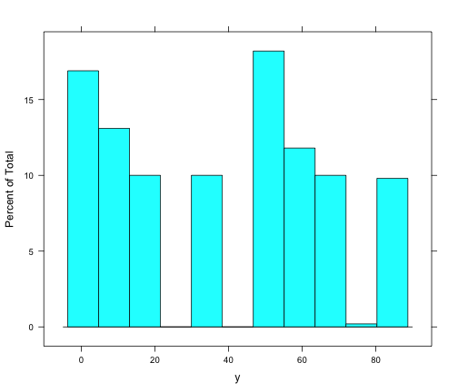
Lattice - histogram w/ conditioning factor
histogram(~y | as.factor(g), d3)
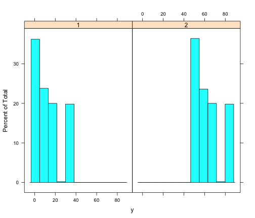
Lattice - barchart
barchart(y ~ as.factor(x),
aggregate(y ~ x, data = d3, mean))
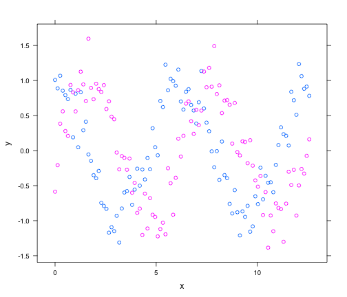
Lattice - barchart w/ conditioning factor
barchart(y ~ as.factor(x) | as.factor(g),
aggregate(y ~ x + g, data = d3, mean))
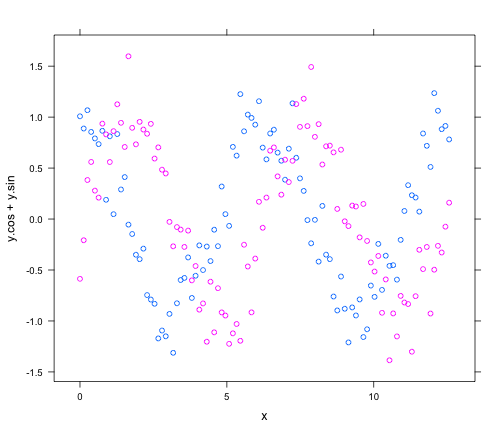
Lattice - condition barchart w/ free scales
barchart(y ~ as.factor(x) | as.factor(g),
aggregate(y ~ x + g, data = d3, mean),
scales=list(y=list(relation="free")))
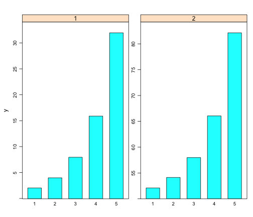
Lattice - barchart w/ grouping factor
barchart(y ~ as.factor(x),
aggregate(y ~ x + g, data = d3, mean),
groups = as.factor(g))

Lattice - barchart w/ auto.key
barchart(y ~ as.factor(x),
aggregate(y ~ x + g, data = d3, mean),
groups = as.factor(g),
auto.key = T)
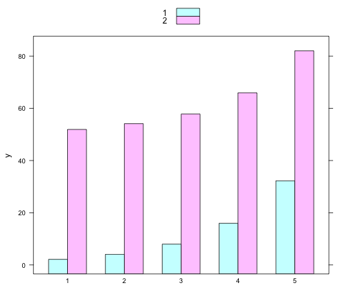
Lattice - barchart w/ auto.key
barchart(y ~ as.factor(x),
aggregate(y ~ x + g, data = d3, mean),
groups = as.factor(g),
auto.key = list(columns = 2))
Lattice - barchart w/ auto.key
barchart(y ~ as.factor(x),
aggregate(y ~ x + g, data = d3, mean),
groups = as.factor(g),
auto.key = list(space = "right"))
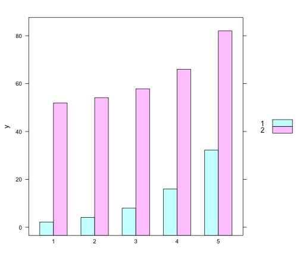
Lattice - xyplot
xyplot(y ~ x, d1)
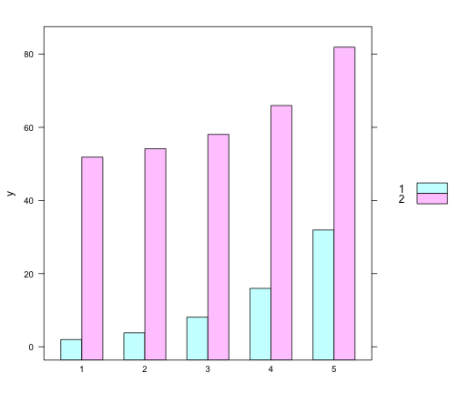
Lattice - xyplot w/ conditioning factor
xyplot(y ~ x | type, d1)
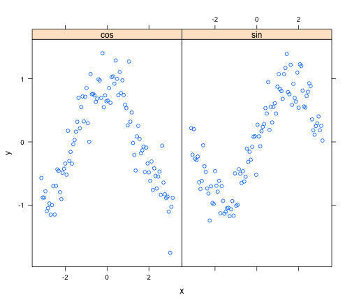
Lattice - xyplot w/ grouping factor
xyplot(y ~ x, d1, groups = type,
auto.key = list(space = "right"))
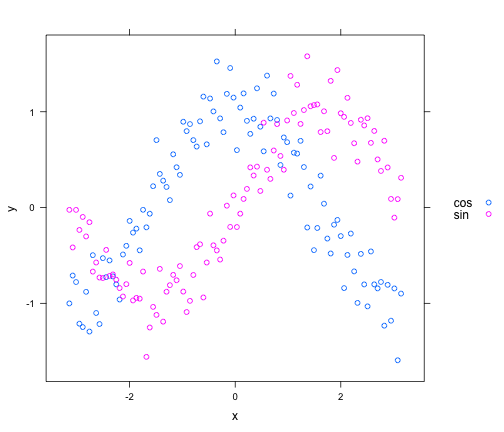
Lattice - xyplot w/ two y variables
xyplot(y.cos + y.sin ~ x, d2,
auto.key = list(space = "right"))
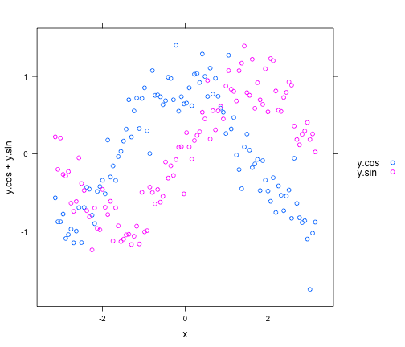
Lattice - xyplot - changing plot type
xyplot(y ~ x, d1, groups = type,
auto.key = list(space = "right"),
type = "l")
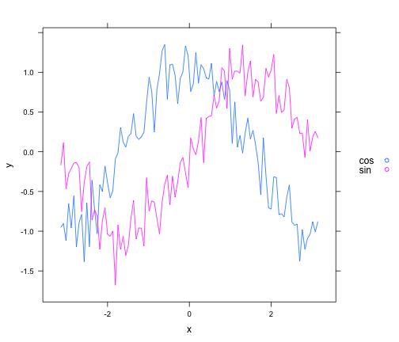
Lattice - xyplot - changing plot type
xyplot(y ~ x, d1, groups = type,
auto.key = list(space = "right"),
type = "b")
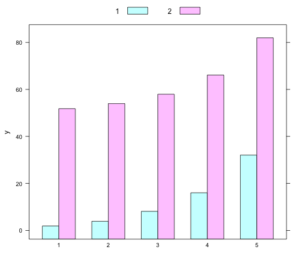
Lattice - xyplot - opther options
xyplot(y ~ x, d1, groups = type,
auto.key = list(space = "right"),
type = "b", pch=2, cex=.5, lty=2, lwd=2)
Lattice - xyplot - tick locations
xyplot(y ~ x, d1, groups = type,
auto.key = list(space = "right"),
scales = list(x = list(
at = c(-pi, -pi/2, 0, pi/2, pi))))
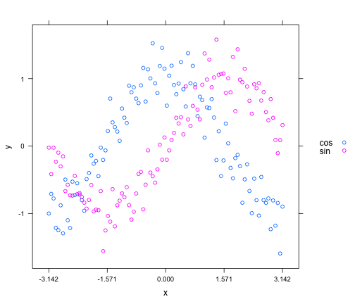
Lattice - xyplot - tick labels
l <- expression(-pi, -pi/2, 0, pi/2, pi)
xyplot(y ~ x, d1, groups = type,
auto.key = list(space = "right"),
scales = list(x = list(
at = c(-pi, -pi/2, 0, pi/2, pi),
labels = l
)))

Lattice Panels
xyplot(y ~ x, d1, groups = type,
auto.key = list(space = "right"),
type = "b",
panel=function(...) {
panel.xyplot(...)
}
)
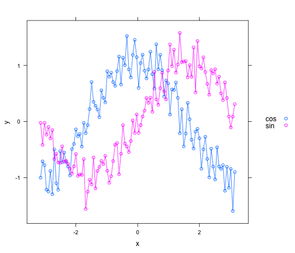
Lattice Panels + Smoother
xyplot(y ~ x, d1, groups = type,
auto.key = list(space = "right"),
type = "p",
panel = panel.superpose,
panel.groups = function(..., pch, lwd) {
panel.xyplot(..., pch = 2)
panel.loess(..., span = .2, lwd = 4)
}
)
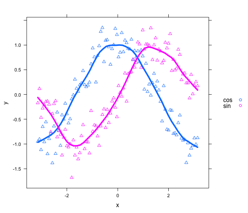
Lattice - levelplot
levelplot(z ~ x + y, d4)
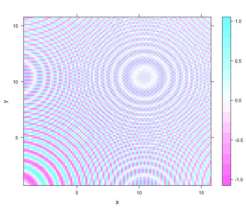